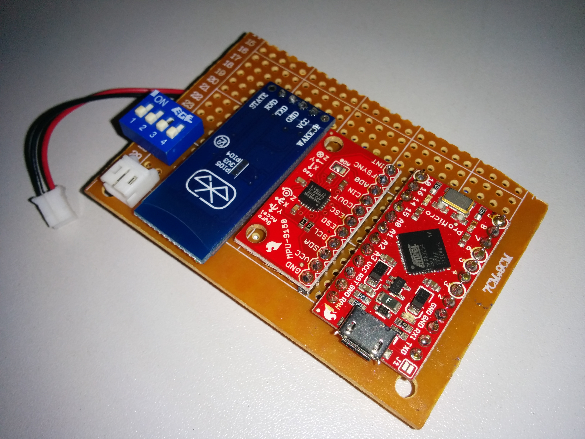

Home
taskanalysis
Undergraduate Thesis 2015 - Head Movement In Task Analysis
Documentation
Makepeace, R. W., and Epps, J., ″Automatic Task Analysis Based on Head Movement″, to appear in Proc. IEEE Engineering in Medicine and Biology Conference (Milan, Italy), 2015.
Database
Hardware

Device Prototype (From Left to Right: Bluetooth, IMU, Microcontroller)
Bill of Materials
| Item | Part Number | Manufacturer | Cost | Source |
|---|---|---|---|---|
| IMU | MPU-9150 breakout board | Invensense/ Sparkfun | $35 | https://www.sparkfun.com/products/11486 |
| Microcontroller | Arduino Pro Micro 3v3 | Sparkfun | $20 | https://www.sparkfun.com/products/12587 |
| Bluetooth Module | HC06 | CREATE UNSW | $10 | http://www.createunsw.com.au/partSale.php |
| Battery Polymer | Lithium Ion Battery - 400mAh | Sparkfun | $7 | https://www.sparkfun.com/products/10718 |
| Battery Charger | LiPo Charger Basic - Micro- USB | Sparkfun | $8 | https://www.sparkfun.com/products/10718 |
| Veriboard | prototyping board | CREATE UNSW | $2 | http://www.createunsw.com.au/partSale.php |
Arduino Pro Micro
Getting started guide: https://learn.sparkfun.com/tutorials/pro-micro--fio-v3-hookup-guide
Pinout:

IMU -> Arduino on I2C (accelgyro.initialize(); accelgyro.getMotion9(&ax, &ay, &az, &gx, &gy, &gz, &mx, &my, &mz);)
Arduino -> Bluetooth on Serial (baud 38400 bits/sec) (Note: Arduino has two serial connections "Serial" is the usb back to the pc, "Serial1" is on pins 0 & 1)
The battery voltage is 3.7V, it is input into the RAW pin on the arduino to make 3.3V that is used for everything else.
Accel.ino
Application Software The application layer was modified by the author from existing code by Jeff Rowberg (https://github.com/jrowberg). The file calls the functions from the MPU-9150 library and prints the information over the USB or bluetooth communications channels. The application software le is available at: (https://www.dropbox.com/s/6fgxjy24ni8ih3e/Accel.ino).
Sensor Library The sensor library was developed by Jeff Rowberg for the sister sensor MPU-6050. The code is publicly available at: (https://github.com/jrowberg/i2cdevlib/tree/master/Arduino/MPU6050). The code was slightly modified by Sparkfun for usage with the MPU-9150 and is publicly available at: (https://github.com/sparkfun/MPU-9150_Breakout/tree/master/firmware).
I2C Library The library for I2C protocol was again developed by Jeff Rowberg and is available at: (https://github.com/jrowberg/i2cdevlib/tree/master/Arduino/I2Cdev).
Data format
on startup send command to control the output ('c' - Bluetooth text every 50ms is recommended)
'a' - Bluetooth text as fast as possible
'b' - Bluetooth text needs acknowledgement
'c' - Bluetooth text every 50ms
'd' - Bluetooth binary as fast as possible
'e' - Bluetooth binary needs acknowledgement
'f' - Bluetooth binary every 50ms
'g' - USB text as fast as possible
'h' - USB text needs acknowledgement
'i' - USB text every 50ms
'j' - USB binary as fast as possible
'k' - USB binary needs acknowledgement
'l' - USB binary every 50ms
each packet conatins one line of ten values seperated by spaces
- time(ms) since start up
- Acceleration X Axis
- Acceleration Y Axis
- Acceleration Z Axis
- Gyroscope X Axis
- Gyroscope Y Axis
- Gyroscope Z Axis
- Compass X Axis
- Compass Y Axis
- Compass Z Axis

Sample Data:

Computer End
Use a USB bluetooth dongle Two devices are called 'head' and 'hip'
- Use a terminal such as putty, teraterm, etc. Open a Serial connection 38400. Save to text file.
- Use Matlab code to log data and store in .mat files.
- On your phone (https://play.google.com/store/apps/details?id=Qwerty.BluetoothTerminal&hl=en)
Rescaling
The numbers come back as signed 16bit integers, to scale them to their real values multiple by range of the sensor and divide by the range of 16 bit number, only 15 because we don't count the sign bit).
Acceleration * 2000/(2^15) (units are now mg where 1000mg = 1g is the earths gravity)
Gyroscope * 250/(2^15) (units are now degress per second)
Acceleration * 1200/(2^15) (units are now uT)
Matlab Code
These are really rough and not really consistent. The code was developed and tested on Matlab R2013a
go.m
connects to bluetooth devices (names: 'head', 'hip')
Inputs: none
Outputs: array of bluetooth objects
SetupBluetooth.m
connects to bluetooth device
Inputs: device name
Outputs: bluetooth object
logger.m
logs data to .mat file.
Once logged it automatically does the scaling.
Sends command 'c' to arduino.
Receives 20 packets per second.
number of samples it will run for (# seconds * 20s amples/seconds)
Inputs: array of bluetooth objects, number of samples, beep (not relevent here)
Outputs: none (saves data file to local directory in date format yyyy_mm_dd_hh_mm.mat, eg 2014_4_11_17_53.mat)
realtime.m
real time plotting and logging.
Uses 'b' command requiring acknowledgement before next packet.
graphing slows it down a lot
Inputs: bluetooth object
Outputs: none (saves data file to local directory in date format yyyy_mm_dd_hh_mm.mat, eg 2014_4_11_17_53.mat)
realtime2.m
same as realtime but two devices.
Inputs: first bluetooth object, second bluetooth object
Outputs: none (saves data file to local directory in date format yyyy_mm_dd_hh_mm.mat, eg 2014_4_11_17_53.mat)